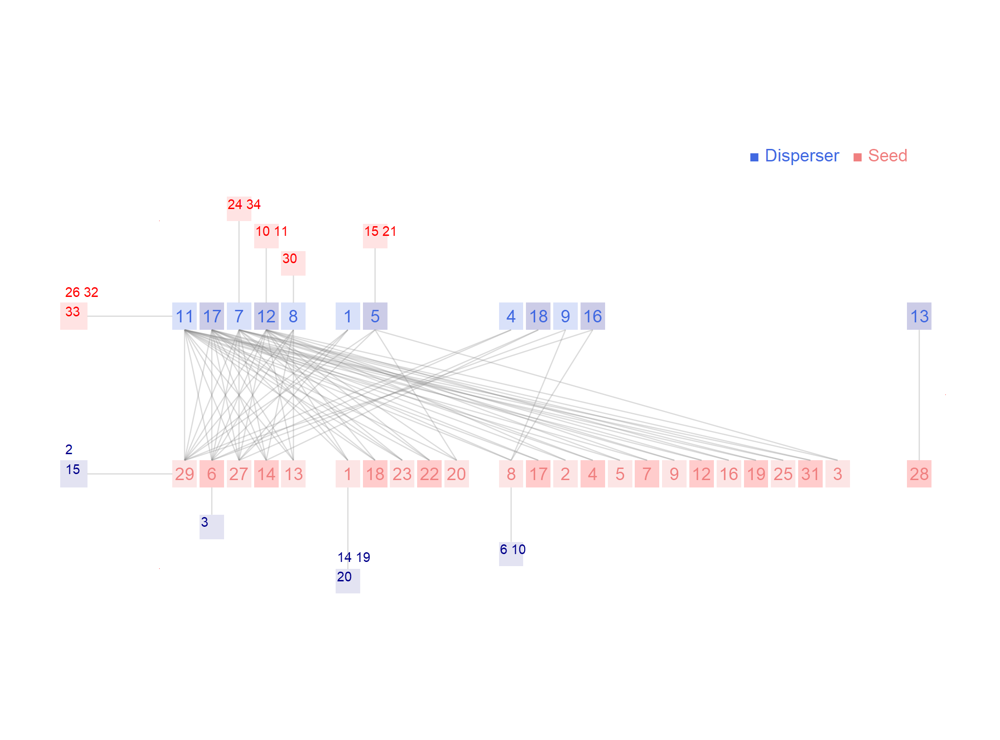

Network: M_SD_004

Disperser 1 Coereba.flaveola., 2 Columba.squamosa., 3 Dendroica.caerulescens., 4 Dendroica.tigrina., 5 Euphonia.musica., 6 Icterus.dominicensis., 7 Loxigilla.portoricensis., 8 Margarops.fuscatus., 9 Melanerpes.portoricensis., 10 Myarchus.antillarum., 11 Nesospingus.sp1.M_SD_004, 12 Spindalis.portoricensis., 13 Tiaris.bicolor., 14 Todus.mexicanus., 15 Tyrannus.caudifasciatus., 16 Tyrannus.dominicensis., 17 Vireo.altiloquous., 18 Vireo.flavirostris., 19 Vireo.latimeri., 20Zenaida.asiatica
Seed
1 Alchornea latifolia , 2 Andira inermis , 3 Anthurium scandens , 4 Buchenavia capitata , 5 Casearia arborea , 6 Cecropia schreberiana , 7 Citrus sinensis , 8 Clusia rosea , 9 Coffea arabica , 10 Cordia sulcata , 11 Dendropanax arboreus , 12 Dendropemon bicolor , 13 Ficus sp1 M_SD_004, 14 Guarea guidonia , 15 Henriettea fascicularis , 16 Inga laurina , 17 Inga vera , 18 Miconia affinis , 19 Miconia racemosa , 20 Miconia serrulata , 21 Momordica charantia , 22 Musa acuminata , 23 Myrcine coriacea , 24 Palicourea crocea , 25 Palicourea guianensis , 26 Philodendron angustatum , 27 Phoradendron sp1 M_SD_004, 28 Piper sp1 M_SD_004, 29 Schefflera morototoni , 30 Solanum rugosum , 31 Syzigium jambos , 32 Tilandsia sp1 M_SD_004, 33 Unidentified sp1 M_SD_004, 34Zanthoxylum martinicensis
Carlo et al. (2003) Avian fruit preferences across a Puerto Rican forested landscape: pattern consistency and implications for seed removal. Oecologia 134: 119-131 Cialitos, Puerto Rico